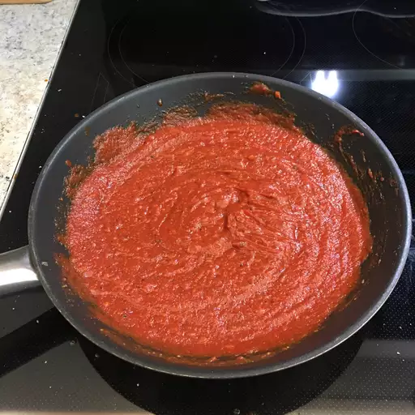

Pasta/Pizza Sauce

This pasta sauce works as a pizza sauce too! It's quick and easy to make and can be doubled or tripled. Substitute other cheeses and herbs for variety.
Prep Time: 5 mins
Cook Time: 15 mins
Total Time: 20 mins
Servings: 2
Ingredients
- 2 tablespoons olive oil
- 2 cloves garlic, chopped
- (6 ounce) can tomato paste
- 2 tablespoons grated Parmesan cheese
- 2 tablespoons red wine
- 2 teaspoons white sugar
- ¼ teaspoon dried oregano
- ¼ teaspoon dried basil/li>
- salt and pepper to taste
Steps
- Heat oil in a large skillet over medium heat.
- Add garlic and sauté until golden and fragrant, about 1 minute.
- Stir in tomato paste, water, Parmesan cheese, wine, sugar, oregano, basil, salt, and pepper.
- Reduce the heat to medium-low and simmer for 10 minutes.